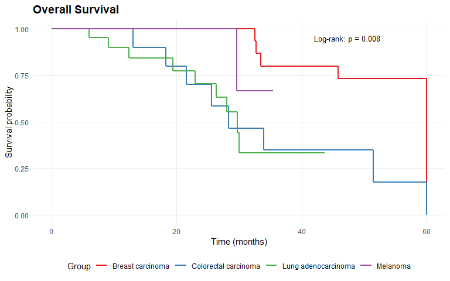

molpathR is a unified molecular pathology data platform that ingests heterogeneous clinical and genomic data sources (VCF, BAM, FASTQ, XML reports, PDF reports, clinical information systems, survival data), builds a queryable in-memory database, and provides an interactive Shiny application for clinical exploration and visualization.
Installation
Install the development version from GitHub:
# install.packages("remotes")
remotes::install_github("cttir/molpathR")Quick example
library(molpathR)
# Load example database with synthetic data
db <- mp_example_db(n_patients = 50, seed = 42)
db
#>
#> ── molpath_db ──────────────────────────────────────────────────────────────────
#> ℹ patients: 50 records x 5 columns
#> ℹ samples: 116 records x 5 columns
#> ℹ variants: 2151 records x 10 columns
#> ℹ reports: 116 records x 5 columns
#> ℹ clinical: 195 records x 5 columns
#> ℹ survival: 50 records x 5 columns
#> ℹ Sample date range: 2021-04-01 to 2025-06-26
#> ℹ Overall completeness: "93.7%"
#> ℹ Created: "2026-06-22 13:47:32"
#> ℹ Source files: 0
# Query pathogenic TP53 variants
tp53 <- mp_query_variants(db, genes = "TP53", classification = "Pathogenic")
head(tp53[, c("sample_id", "gene", "variant", "classification", "vaf")])
#> # A tibble: 6 × 5
#> sample_id gene variant classification vaf
#> <chr> <chr> <chr> <chr> <dbl>
#> 1 SAM-2021-0010 TP53 TP53 deletion Pathogenic 0.420
#> 2 SAM-2021-0011 TP53 TP53-UNKNOWN fusion Pathogenic 0.464
#> 3 SAM-2022-0013 TP53 TP53-UNKNOWN fusion Pathogenic 0.322
#> 4 SAM-2021-0017 TP53 TP53 loss Pathogenic 0.214
#> 5 SAM-2022-0018 TP53 p.R282W Pathogenic 0.250
#> 6 SAM-2023-0020 TP53 p.R248W Pathogenic 0.213
# Survival analysis by diagnosis
mp_plot_survival(db, group_by = "diagnosis", type = "os")
Launch the Shiny app
mp_run_app(db)Features
- Parsers for VCF, FASTQ, BAM, XML reports, PDF reports, clinical systems, and survival data
- Relational in-memory database linking patients, samples, variants, reports, clinical, and survival data
- Query engine with tidy evaluation and free-text search
- Publication-ready plots: variant landscapes, mutation spectra, survival curves, cohort overviews
- Interactive Shiny application with 6 tabs for clinical exploration
Use of LLM tools
Portions of this package were prepared with assistance from large language model tooling for narrowly defined, non-authorial tasks: copyediting, prose smoothing, Markdown/LaTeX formatting, scaffolding of boilerplate files (CI configs, build scripts), code refactoring. The tools used were Chat AI, the LLM service of KISSKI (GWDG), and a self-hosted Mistral Small (24B, Apache-2.0) run locally via Ollama and the ollamar R package — local inference only, with no data sent to third parties for the self-hosted model.
All scientific claims, methodological choices, analyses, interpretations, and conclusions are the author’s own. No LLM-generated text was incorporated without review and revision, and every reference was verified against its DOI, arXiv ID, or ISBN.
License
MIT License. See LICENSE.md for details.